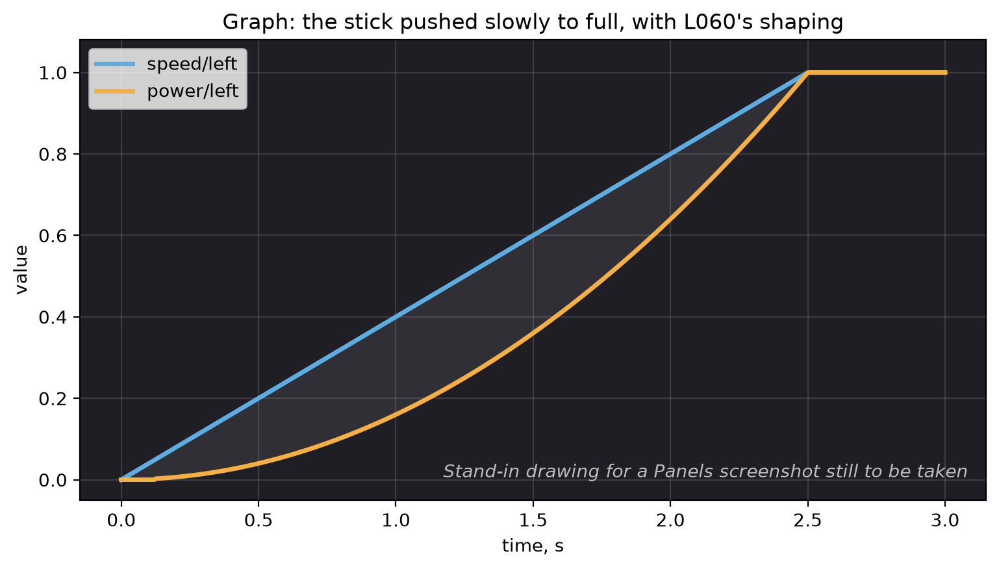

Watch the numbers while it drives¶
What you will have when this is done¶
The robot’s own numbers on a screen while somebody drives it. You get a table of every value the lesson sends, a graph of any two of them, and a picture of where the robot thinks it is. After this, “it went crooked” is a graph you can point at. It stops being an argument.
Before you start¶
L060 is finished, because step 3 graphs the two numbers L060’s squaring makes.
A robot with its battery in, running a lesson.
A laptop or a phone that can join the robot’s Wi-Fi.
The steps¶
Step 1: open Panels¶
Join the robot’s Wi-Fi, then open http://192.168.43.1:8001.
Panels is a web page the Robot Controller app serves. Nothing in the lesson starts it and nothing turns it on.
You’ll know it worked when the page loads and shows its panels, even before an OpMode runs.
If it didn’t, and the page never loads, the laptop is on the wrong Wi-Fi. Check which network it joined.
If it didn’t, and you get a different page full of tuning buttons, that is AutoTune on port 10158. It is a second server in the same app, and it is not this.
Step 2: find the numbers your lesson sends¶
Run L060 Shaping, the copy finished in L060, and press PLAY. The Telemetry panel fills with one
line per value, each shaped name: number.
The Graph panel has a list to pick from, and a name only joins that list after it has been sent once. So start the OpMode first, then go looking. The list is flat, in the order the names first arrived.
You’ll know it worked when speed/left and power/left are both in the list, and
both numbers move when you move the left stick. The cheat sheet lists every name
each lesson sends.
If it didn’t, and a name you expected is missing, nothing sent it. Either that lesson does not publish it, or the line that publishes it is not typed yet.
Step 3: graph the two against each other¶
Pick speed/left and power/left and push the stick slowly from nothing up to full.
You’ll know it worked when the two lines leave zero together and the shaped one stays under the raw one the whole way up, until they meet at full stick. That is L060 drawn: squaring a number below 1 makes it smaller.
If it didn’t, and the two lines lie exactly on top of each other, nothing is being shaped. That is L060S060 not typed yet.
If it didn’t, and both lines look like a staircase rather than a curve, that is the sampling and
it is normal. The robot sends to Panels every 75 ms and drops the loops in between, so with a loop
of about 5 ms, roughly one loop in 15 reaches the graph. For the same reason one slow loop will not
show in loop/period_ms. Graph loop/max_period_ms instead: it only ever steps up, and a step
means some loop blocked.

The Panels Graph panel with speed/left and power/left both plotted while the stick is pushed slowly to full, so the gap between the two curves is the thing a student is looking for.¶
Step 4: look at where it thinks it is¶
Open the Field panel. There is nothing to set up: the lesson sends the field’s coordinates with every frame.
A blue square 18 in by 18 in is the robot, and the line out of it is the way the robot faces. A grey line behind it is where it has been since the OpMode started. In a lesson that follows a path you also get an orange line for the piece of path being followed, and a green square for the nearest point on that path at the heading the path wants there.
You’ll know it worked when the blue square moves as the robot moves. Turn the robot, and the line out of the square swings round with it.
If it didn’t, and the robot draws in a corner with most of the square off the field, nothing is wrong. Pedro puts (0, 0) in a corner and the field runs 0 in to 144 in, so a lesson that never sets a pose starts there.
If it didn’t, and there is no green square or orange line, you are in a teleop lesson. There is no path to draw. You get the robot and its trail.
What has not been done here
Nobody opened Panels for this page. Every step is taken from the team’s own PANELS.md, and the
names in step 2 are read out of the lesson code, the same way the cheat sheet gets
them. What each if it didn’t line describes follows from those two, and none of them was watched
on a robot.
What you just did¶
Panels has no separate graph call. It reads the telemetry text, and any line shaped name: number
becomes a table row and a graph series at once. That is why one Tracker.publish call gets you
both, and why a name may hold anything except a colon.
The same call also writes the number into the flight log on the robot. Panels is the live view and the log is the recording, and they carry the same names, so a graph you found while driving is a graph you can find again afterwards.
The gap between the blue square and the green one is worth knowing. The green square is the nearest point on the path, not where the robot should have got to by now. So the gap says how far off the line the robot is and how crooked it is sitting. It does not say whether the robot is running late.
Where next¶
task.bench is the other half of this. It runs the same lessons on a laptop, with no robot at all.